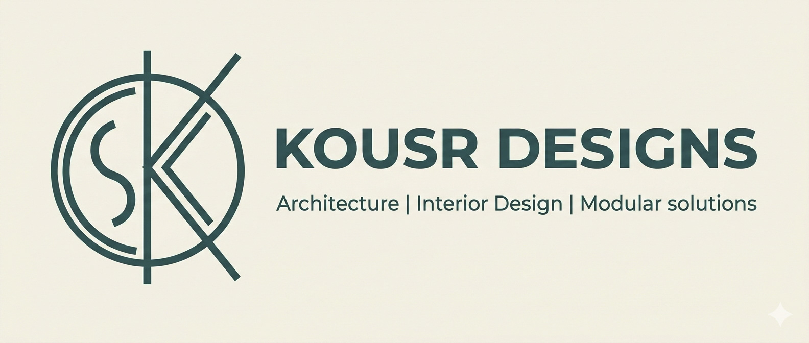

Residential Interiors
Bespoke villas, penthouses and apartments shaped around your rhythms, rituals and personal sense of home.

INDIRA NAGAR · BENGALURU
Bangalore's interior design studio crafting considered homes, high-performance workspaces and distinctive commercial environments.
THE KOUSR APPROACH
We bring architectural clarity and tactile warmth together. From the first sketch to the final styling detail, every decision is guided by how a space should look, work and feel.
Discover our philosophy →DESIGN PRACTICE & DISCIPLINES
One considered design language, shaped around the character and purpose of each space.
Bespoke villas, penthouses and apartments shaped around your rhythms, rituals and personal sense of home.

Ergonomic, acoustically considered workplaces that support focus, collaboration and brand presence.

Distinctive cafes, retail and dining environments designed to welcome, engage and leave a lasting impression.
 FORM · MATERIAL · LIGHT
FORM · MATERIAL · LIGHTA STUDIO ROOTED IN DETAIL
Rooted in the design-forward neighbourhood of Indira Nagar, Bangalore, KOUSR Designs brings architectural rigour and interior warmth into balance. We believe lasting luxury is found in thoughtful proportion, quiet craftsmanship and spaces that feel deeply personal.
To curate timeless architectural interiors that harmonise function, beauty and emotional well-being.
To shape modern Indian spaces through sustainable innovation, precise planning and artisan collaboration.
WHAT GUIDES US
Balancing openness with intimate, functional zones.
Custom joinery and considered finishes, made with care.
Thoughtful sourcing of durable, responsible materials.
Clear scopes, milestone communication and cost visibility.
Comfort shaped through considered lighting and sound.
Disciplined coordination from planning through handover.
WHAT WE DO
A connected service offering that carries the design intent through each stage of your project.
A WORLD OF POSSIBILITIES
Explore a selection of visual directions across homes, workplaces and places to gather.
Imagery is illustrative design inspiration and is not represented as completed KOUSR Designs projects.
A CLEAR PATH FORWARD
Our seven-stage methodology keeps the creative ambition and practical execution moving together.
Understand your lifestyle, brief, site conditions, measurements and budget priorities.
Explore palettes, textures, spatial flow and the design story for your space.
Review detailed visualisations to align on the intended look and feel before execution.
Compare real samples of stone, wood, fabrics, finishes and hardware.
Confirm scope, itemised estimates, responsibilities and project milestones.
Coordinate site teams, specialist trades, quality checks and progress updates.
Complete final checks, snag rectification, cleaning and a considered handover.
DETAIL IS THE DIFFERENCE
Clear standards and coordinated delivery help protect the design intent from drawing board to finished space.
Precision joinery, consistent detailing and finish checks.
Material specifications selected for suitability and durability.
Waterproofing and moisture-conscious detailing in wet areas.
Safe, coordinated electrical planning and concealed routing.
Lighting plans developed for comfort and intended use.
Climate-aware material selection for Bangalore conditions.
Acoustic comfort considered where the space requires it.
Multi-stage snagging and quality gate inspections.
DELIVERY METHODOLOGY
We plan around agreed milestones, coordinated vendor schedules and accountable site supervision. Regular progress reviews help surface decisions early and keep the project team aligned.
THE KOUSR DIFFERENCE
A thoughtful partner for the decisions, details and delivery that make a space your own.
KIND WORDS, IN TIME
Client stories will appear here as projects are completed and testimonials are approved for publication.
LET'S BEGIN
Tell us a little about your project. Our team can help you take the next step with a focused design conversation.
2nd & 3rd Floor, 13th Cross Rd,
Indira Nagar II Stage, Hoysala Nagar,
Indiranagar, Bengaluru, Karnataka 560038.